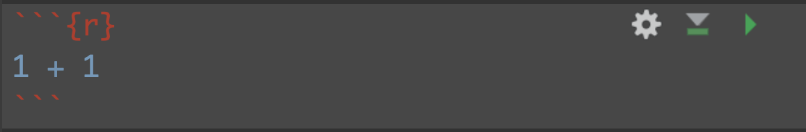
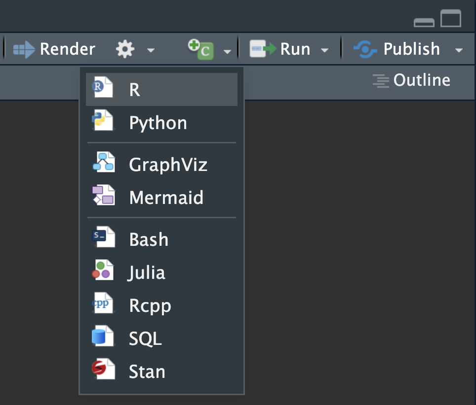
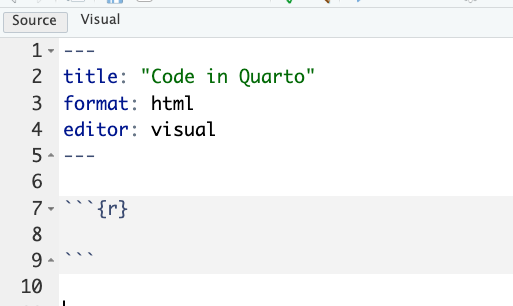
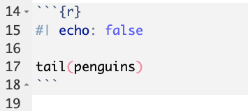
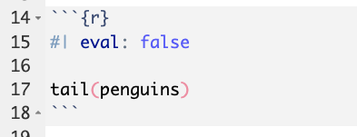
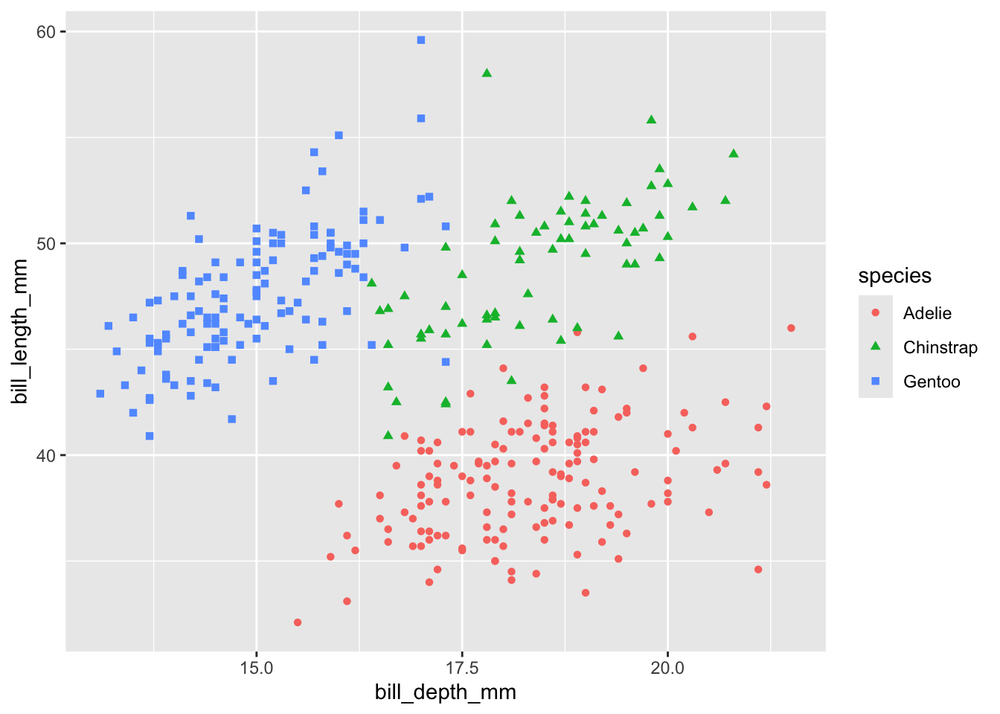
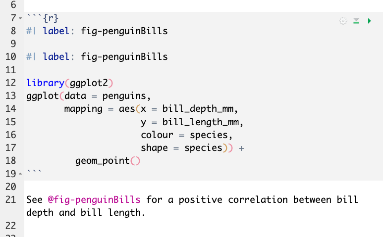
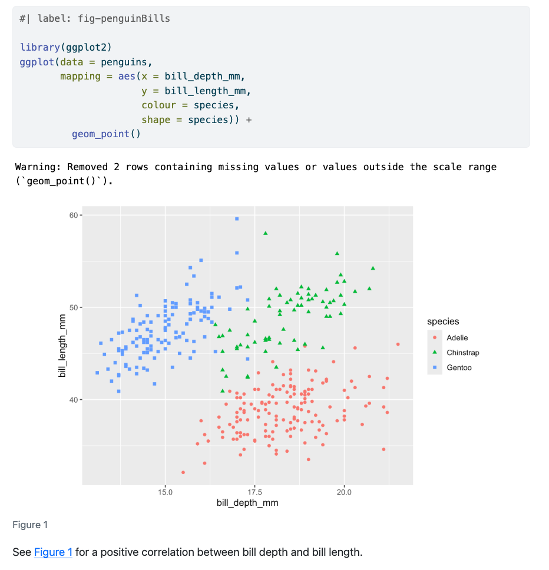

# install.packages("palmerpenguins")
library(palmerpenguins)
head(penguins) Code in qmd files
Aims
The aims of this section are to:
- Learn the fundamentals of code cells in Quarto documents.
- Become familiar with
inline coding.
- Generate an
htmldocument with well-documented code and embedded output.
- Reinforce and expand the syntax skills from the previous episode and learn to apply good commenting/documentation habits when working in Quarto.
Code cells
Code cells are the “working unit” of code within Quarto. Each code cell will be evaluated and output will be embedded into the document immediately below the code cell. For this reason, it is worth thinking about the size and organisation of the code cell. A reasonable code cell might include loading all the libraries you will use in the analysis, or the generation of a single figure.
When we want to embed code we do so with the use of the ` (“backtick”). Three backticks, followed by a curly bracket, and a symbol for the language our code will be in, signifies the start of a code block. We end the code block with three backticks. When we are within a code cell we can run any line of code, just the same as we would with a basic R markdown or R script document. Code cells are automatically executed as part of the rendering process.

Note: In RMarkdown we call these “code chunks” and in Quarto they are referred to as “code cells”.
We can also insert a code cell using an in-built button in RStudio (the “+” and letter “C” in a green box):

There are also keyboard shortcuts: shift + command + I for mac, or windows + alt + I for a Windows machine.
Exercise: Insert a code cell (5 min)
Create a new quarto document (File > New File > Quarto Document), give it the title “Code in Quarto” and select Create Empty Document
Insert a new R code cell. You do this by either:
- Using the new code cell button in Visual editor (click the “+” and letter “C” in a green box)
- Manually adding backticks and curly braces in the Source editor
- Using keyboard shortcuts
In ‘Source’, it would now look like this:

Within the code chunk add these lines:
Also add in comments (this is good reproducibility practise!), for example:
# this function loads the library
# this shows first 6 lines of the penguin dataframeNote: the palmerpenguins R package has a built-in object called penguins, which is what we are viewing with the head function.
Render the document. You may be prompted to save the file first.
Because code cells are executed during rendering, they need to work!
For example, if you do not have the palmerpenguins package installed, this cell cannot successfully execute and the render process will fail. Using the # symbol within a code cell will cause that line of text to be ‘commented out’ (i.e., it will be interpreted as plain text, rather than code).
In the output document you should see both the code and the output of that code - in this case, the first six rows of the penguin object:
library(palmerpenguins)
head(penguins)# A tibble: 6 × 8
species island bill_length_mm bill_depth_mm flipper_length_mm body_mass_g
<fct> <fct> <dbl> <dbl> <int> <int>
1 Adelie Torgersen 39.1 18.7 181 3750
2 Adelie Torgersen 39.5 17.4 186 3800
3 Adelie Torgersen 40.3 18 195 3250
4 Adelie Torgersen NA NA NA NA
5 Adelie Torgersen 36.7 19.3 193 3450
6 Adelie Torgersen 39.3 20.6 190 3650
# ℹ 2 more variables: sex <fct>, year <int>Code cell options
Within each code cell we can add arguments that modify how the code is interpreted or displayed in the rendered document. We will add this information at the start of the code cell with #| (called the hash pipe).
Global code options
Code options included in the YAML header are global - they will be applied to all code cells in this document. As we will cover below, individual code cells (chunks or blocks of code) can be controlled separately.
Some useful global options we might want to set in the YAML header are:
code-fold: true
code-tools: true
When code-fold is set to true, all code blocks will be automatically collapsed. This is useful when you want code to be available but would otherwise distract from the flow of the document e.g., when teaching/training, presenting at lab meetings. code-tools provides a simple button at the top of the html that can then be used to toggle all code to open/closed (an easy ‘reset’ of all code blocks).
Echo and Eval
Here we will use the #| echo: false command to hide the R code itself from the final doc, while the output is still displayed.
The code cell looks like this:

But rendered document shows only the executed code embedded into the document, like this:
# A tibble: 6 × 8
species island bill_length_mm bill_depth_mm flipper_length_mm body_mass_g
<fct> <fct> <dbl> <dbl> <int> <int>
1 Chinstrap Dream 45.7 17 195 3650
2 Chinstrap Dream 55.8 19.8 207 4000
3 Chinstrap Dream 43.5 18.1 202 3400
4 Chinstrap Dream 49.6 18.2 193 3775
5 Chinstrap Dream 50.8 19 210 4100
6 Chinstrap Dream 50.2 18.7 198 3775
# ℹ 2 more variables: sex <fct>, year <int>Note that hash pipe arguments are not displayed!
Alternatively, we can display the code but not the output with #| eval: false
When eval is set to false we see the code used but the code is not evaluated and no output is embedded into the final document. This is useful for when you want to demonstrate code but not run something that could take a long time or you do not want to over-write the original file.
The code cell looks like this:

And the rendered document looks like this:
tail(penguins)Now see for yourself! Try using #| eval: false and #| echo: false and render the document.
Cross-referencing: figures and tables
Quarto allows easy cross-referencing to figures and tables.
We can attach a label to a code block with #| label:, followed by a given label. We can then use @label to cross-reference.
Figures example:
Open a code block.
Directly under the header line of your code block, add the text #| label: fig-penguinBills. Then, add some ggplot code to make a figure. We’ll do a simple geom_point() plot here using the palmerpenguins dataset as an example. Then, underneath your code block, write some text cross-referencing the figure label. See our examples below:
#| label: fig-penguinBills
# install.packages("tidyverse")
library(ggplot2)
ggplot(data = penguins,
mapping = aes(x = bill_depth_mm,
y = bill_length_mm,
colour = species,
shape = species)) +
geom_point()Warning: Removed 2 rows containing missing values or values outside the scale range
(`geom_point()`).

See Figure 1 for a positive correlation between bill depth and bill length.
What is happening above (behind the scenes)?
In the qmd file used to build the website you are looking at right now, the code block above contains two #| lines:
#| label: fig-penguinBills
The first label line directly under the start of the code block (indicated by ```{r} ) tells the code block to cross-reference this figure using the label “fig-penguinBills”.
Then, the line #| label: fig-penguinBills is repeated, so that you can see it in the code block above. As it is separated from the start of the code block by a line, it gets read by r as a commented out line, the same as any line starting with a #.
Below the code block the text reads:
See @fig-penguinBills for a positive correlation between bill depth and bill length.
Here, the @fig-penguinBills automatically gets converted to the text “Figure 1”, with a clickable link.
Confused? Here are pictures of the full code and output:
Code behind the scenes:

Output:

Tables example:
For cross referencing tables it is very similar to figures, but instead we use the tbl prefix, and we can also add a Table caption using #| tbl-cap: For example:
#| label: 'tbl-penguin-mass-summary'
#| tbl-cap: 'Penguin Mean Body Weights'
library(dplyr)
Attaching package: 'dplyr'The following objects are masked from 'package:stats':
filter, lagThe following objects are masked from 'package:base':
intersect, setdiff, setequal, unionlibrary(gt)
penguins |>
group_by(island) |>
summarise(mean_body_mass_g = mean(body_mass_g, na.rm = TRUE)) |>
gt() |>
fmt_number(mean_body_mass_g) |>
cols_label(island ="Island",
mean_body_mass_g = "Mean Body Mass (g)") |>
cols_align(columns = island, align = "left")| Island | Mean Body Mass (g) |
|---|---|
| Biscoe | 4,716.02 |
| Dream | 3,712.90 |
| Torgersen | 3,706.37 |
And cross referencing is done in a similar matter by using the label, e.g. using @tbl-penguin-mass-summary gives us the cross-reference Table 1, which is automatically converted to the words “Table 1” with the hyperlink.
Now you try it out!
Want more? For more ways to cross-reference, see the Quarto docs here.
Warnings and messages
We can suppress warning and other messages from code outputs by adding:
#| warning: false will suppress warnings from code output. This can be very useful when you have a warning that is showing up repeatedly. We recommend printing the warning once and noting that it will be suppressed in all future cases.
#| message: false will suppress all messages, for example attached packages and masked package messages.
Exercise: remove messages and warnings (2 min)
In the above examples for tables and figures we saw both warning and messages. Try adding either #| warning: false or #| message:false to the ggplot code cells above, and re-render the document to confirm warnings/messages have disappeared.
Solution
Figure without warning:
#| label: fig-penguinBillsNoWarning
#| warning: false
library(ggplot2)
ggplot(data = penguins,
mapping = aes(x = bill_depth_mm,
y = bill_length_mm,
colour = species,
shape = species)) +
geom_point()
Note that we cannot use the same label twice within a document, so we need to use a new label (penguinBillsNoWarning) or the render will fail.
Table without message:
#| message: false # hide the messages from loading dplyr
#| label: 'tbl-penguin-mass-summary-NoMessage'
library(dplyr)
library(gt)
penguins |>
group_by(island) |>
summarise(mean_body_mass_g = mean(body_mass_g, na.rm = TRUE)) |>
gt() |>
fmt_number(mean_body_mass_g) |>
cols_label(island ="Island",
mean_body_mass_g = "Mean Body Mass (g)") |>
cols_align(columns = island, align = "left")| Island | Mean Body Mass (g) |
|---|---|
| Biscoe | 4,716.02 |
| Dream | 3,712.90 |
| Torgersen | 3,706.37 |
Set figure dimensions
#| fig-width: x and #| fig-length: y can be used to manually set the dimension of embedded figures, in inches.
Inline code
Inline code refers to code that is used within the document but is not stored separately in a code cell. The purpose of inline code is to embed the output directly into the document text.
For example, if we wanted to describe the mean bill length for the Adelie species of penguins in the penguins object, we could manually calculate the value and then add a written statement:
round(mean(na.omit(penguins$bill_length_mm)),2)[1] 43.92# The mean bill length of penguins in the dataset is 43.92mm.To streamline the above with inline code we need to do three things:
Write the text statement and open a set of backticks (`).
Specify the language (in this case, R).
Include the code to be evaluated.
This is demonstrated below, using quotation marks in place of backticks so that it is human readable:
The mean bill length of penguins in the dataset is "r round(mean(na.omit(penguins$bill_length_mm)),2)"mm.The same line of code above but with backticks in place of quotation marks is rendered as:
The mean bill length of penguins in the dataset is 43.92mm.Why use inline code?
The key reason for using inline code is reproducibility. If you need to re-run your analysis, or update an input file, your statements will automatically be updated to reflect the new data. This has the additional benefit of reducing human error: avoids copy-paste errors (or copy and writing errors) between the calculated values and the value stated in text and ensures that all instances of this value are identical (e.g., if this value is referred to repeatedly).
Good practice for inline code
Remember that while the final document will have the evaluated output, the document you (or a collaborator) are working on will have the code embedded. Therefore, keep inline code simple and short. If the code required is lengthy, consider moving this to a code cell and storing the output as an object. Then use the object as part of the inline code.
Do not use inline code in Quarto headings (it will not be evaluated).
Make use of the
round()function to control the number of decimal places.Remember to include
na.omit()if appropriate. Data may not currently include NAs, but if you think the data could be updated in future this may cause issues.Add comments within code cells or as appropriate so that readers know where the values are coming from.
Summary
In this section we have:
Embedded code cells and modified their behaviour with the hash-pipe.
Embedded output, including figures, and made this output cross-referencable with the use of the label option.
Used inline code to improve reproducibility in our document.
Exit exercises
What are the three methods for inserting a new code cell?
What symbols do we add to set the code cell options?
If a code cell has
echo: falseandeval: true, what will happen when the document is rendered?List one other code cell option we have used today.
Give two reasons you might use to convince a co-worker to use inline code.